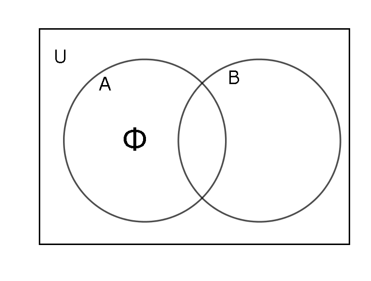

:集合とは要素(元)の集まり。例えば、要素xが集合Aに属することを\(x\in A\)と表す。
:要素を一つも持たない集合。つまり要素数が0の集合。Φ(ファイ)で表す。
ここからは、異なる2つの集合A,Bを定めるとする。
:ある集合Aの要素のすべてが集合Bの要素であることを、AはBの部分集合という。\(A \subset B\)と表す。
[やや応用](集合Aと「集合Bの補集合＝集合Bでない部分全体の集合」の共通部分が空集合である。
つまり\(A \subset B \Leftrightarrow A \cap B^c =Φ\)
が成り立つ。あわせて
\(A \subset B \Leftrightarrow B^c \subset A^c\)もベン図で確認しておこう。これらは集合A,Bをそれぞれ条件a,bに対する真理集合とするとき条件文\(a \Rightarrow b\)[命題]を真とすること(つまり反例がないこと)と対偶\( \lnot b \Rightarrow \lnot a\)を表すことがわかる)
：ある集合Aと集合Bのどちらにも共通する要素全体の集合を集合AとBの共通部分という。\(A \cap B\)と表す。

：ある集合Aと集合Bの少なくともどちらか一方に属する要素全体の集合を集合AとBの和集合という。\(A \cup B\)と表す。

：ある考察対象全体を普遍集合または全体集合と呼び、考える対象の全てを部分集合に含むものとする。
また、補集合とはある集合でないもの全体の集合である。例えば、ある集合Aの補集合は\(\overline{A}\)や\(A^c\)で表す。

（集合Bと集合Bの補集合は共通部分が空集合。そしてそれらの和集合は全体集合Uに一致する。
つまり式で表すと、
\(B \cap\ B^c = Φ \),
\(B \cup\ B^c = U\)
この2つの式が補集合の性質を示していることに注意。）
\((A \cap B)^c = A^c \cup B^c\)
\((A \cup B)^c = A^c \cap B^c\)
第一式は次のように言い換えられる。
「\(A\)と\(B\)の(共通部分)の否定」は「\(A^c\)と\(B^c\)の(和集合)」になるということ。(共通部分)↔(和集合)を互いに入れ替えるともう一方の式になる。
この2つ以上の集合に常に成り立つ規則をド・モルガン則と呼ぶ。異なる集合2つに対して成り立つことはベン図から簡単に確認できる。
共通部分と和集合に対して、交換法則・結合法則・分配法則が成り立つ。共通部分は別名、積集合であり、実数の和と積に対してこの3つの法則が成り立つことと合わせて覚えたい。
- 交換法則
\(A \cap B = B \cap A\)
\(A \cup B = B \cup A\) - 結合法則
\((A \cap B) \cap C\)
\(= A \cap (B \cap C)\)
\((A \cup B) \cup C\)
\(= A \cup (B \cup C)\) - 分配法則
\(A \cap(B \cup C)\)
\(= (A \cap B) \cup(A \cap C)\)
\(A \cup(B \cap C)\)
\(= (A \cup B) \cap (A \cup C)\)
成り立つことをベン図で必ず確認しよう。特に分配法則に注意。AとBの間の演算関係とAとCの間の演算関係が式の左辺と右辺で変わっていないことに注目。